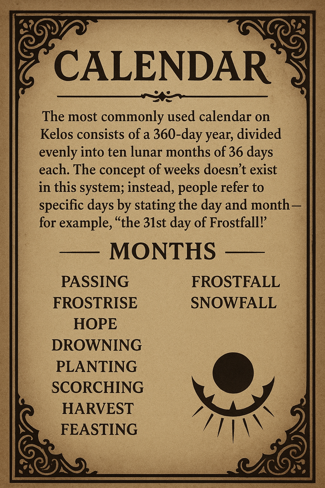

Age of the Sun
The era before Starfall is commonly known as the Age of Sun. Written records from this period are scarce and come almost exclusively from Elven or Dwarven sources. The farther back in time one looks, the more legendary and embellished both spoken and written accounts become. As a result, much of the history of the Age of Sun is considered mythical, and any dates associated with it should be treated as rough approximations rather than precise facts.
Timekeeping
Skazka rotates fully around its sun once every twenty-four hours. Most inhabitants structure their daily lives around the natural cycle of daylight. While clocks and watches do not exist, people commonly mark time using recognizable phases of the day, such as sunrise, high sun, sundown, and midnight, coordinating activities and events according to these natural cues.
